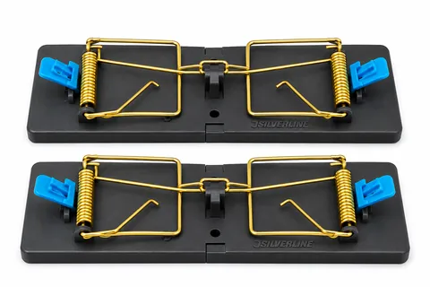
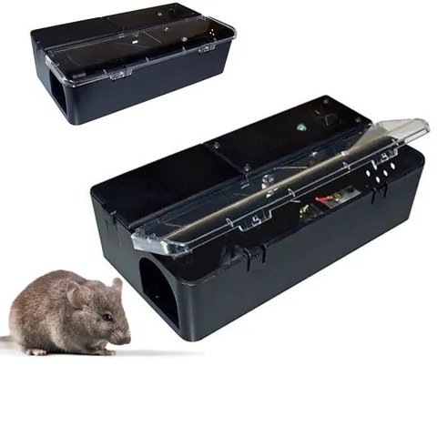
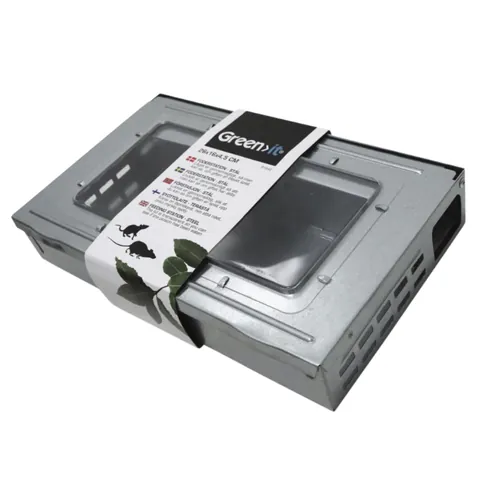
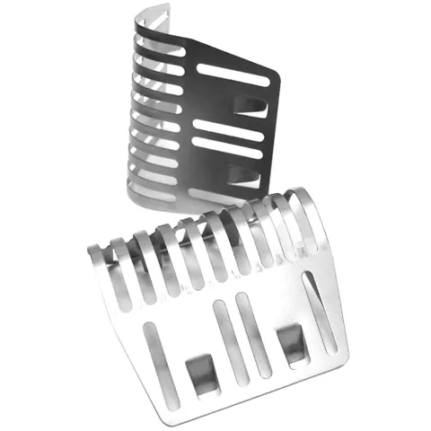
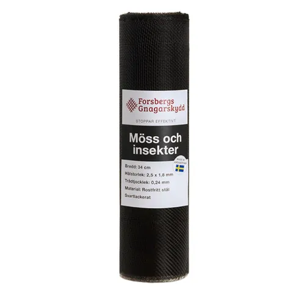

Kjennetegn5å se etter
Forveksles med2arter
GruppeGnageri leksikonet
Slik kjenner du den igjen
- 1Kropp 6–10 cm og hale 7–10 cm
- 2Spiss snute
- 3Små ører
- 4Gråbrun pels
- 5Ekskrementer på størrelse med riskorn
Fakta om husmus
Størrelse6–10 cm
- Kroppslengde på 6–10 cm og vekt på 12–28 g
- Halen er omtrent like lang som kroppen (7–10 cm)
- Bakfotens avtrykk er 12–14 mm langt
Utseende
- Pelsen er oftest grålig med nyanser av brunt på ryggen og lysere underside
- Føttene er brungrå med hvite tåspisser
- Spiss snute med små øyne og små ører
- Fortennene har et karakteristisk hakk på innsiden
Spor og tegn – dette ser du etter
- Små, sylinderformede ekskrementer på 3–6 mm med spisse ender
- Sterk, karakteristisk lukt
- Fotspor med fire tær på frembeina, fem på bakbeina, og ofte slepespor etter halen
- Gnagemerker på emballasje, bygningsdeler og ledninger
Hvor du finner den
- Innendørs i bebygde strøk i Norge (fraværende i fjellet og enkelte øyer)
- Bygger bol nær mat og varme, blant annet i vegger, under gulv, i møbler og kasser
- Beveger seg vanligvis bare noen få meter fra bolet
- Kan forekomme utendørs med bol gravd ned i bakken
Livssyklus og sesong
- Kjønnsmoden ved 5–8 ukers alder
- Drektighetstiden varer i 3 uker
- Får 4–7 unger per kull (opptil 12 unger) og omkring 8 kull årlig innendørs
- Lever i omtrent 1 år
Skade og helse
- Gnager på vegger, gulv, tak, dører, møbler og isolasjon
- Kan forårsake kortslutning og brann ved å gnage på strømledninger, samt skade datakabler
- Spiser, forurenser og ødelegger matvarer og dyrefôr med urin og ekskrementer
- Luktplager fra døde individer i gulv og vegger, samt potensiell spredning av smittestoffer
Forebygging
- Tette alle åpninger og sprekker som er større enn 6 mm med metallnetting, metallbeslag, betong eller tettepasta
- Kappe greiner som henger inn over tak, og sikre at kjellervinduer og dører er helt tette
- Montere glatte sperrer på minst 40 cm på yttervegger og 30–45 cm brede krager rundt ledninger og tau
- Fjerne høyt gress, kratt, skrot, nedfallsfrukt og lett tilgjengelig fugle- og dyremat inntil bygninger
Slik blir du kvitt den
- Fjerne tilgang på mat, vann og skjulesteder, og plassere varer minst 45 cm over gulvet
- Fangst med tradisjonelle klappfeller eller flerfangstfeller for levende mus
- Vaske med våt klut i stedet for å koste eller støvsuge for å unngå oppvirvling av smittepartikler
Kilde: FHI Skadedyrveilederen: Husmus.
Utstyr mot husmus
Valgt for denne siden · kjøp hos Skadedyrbutikken
BekjempSMART Musefelle i plast 4 pkKlassisk klappfelle i plast som gir rask og sikker avliving av mus.
139 krSe produktet →

BekjempMusefelle - Elektrisk - RyomElektrisk musefelle til innendørs bruk som avliver mus på en human måte.
425 krSe produktet →

Fang levendeMusefelle for levende fangstGalvanisert felle som fanger mus levende uten bruk av kjemikalier eller gift.
239 krSe produktet →

TettLuftespalte beslag 6 cmBeslag som hindrer mus i å trenge inn gjennom åpne luftespalter.
49 krSe produktet →

TettTetteduk til mus og insekter - 10 meterDuk til tetting av sprekker, hull og ventiler for å utestenge mus.
995 krSe produktet →
Kan forveksles med
Raskeste testSkogmus har store ører og store øyne, mens husmus har små ører og små øyne.

| Husmus | Skogmus | |
|---|---|---|
| Ører | Små ører | Store ører |
| Øyne | Små øyne | Store, utstående øyne |
| Pels på ryggen | Gråbrun eller grålig med nyanser av brunt | Brunlig rygg |
| Buk / underside | Lysere underside | Lys eller hvit buk |
| Hale | 7–10 cm, omtrent like lang som kroppen | Lang hale |
Foto: Husmus: Dion Art (beskåret), CC BY-SA 4.0 · Skogmus: Hans Hillewaert, CC BY-SA 3.0
Raskeste testSjekk størrelsen: Husmusa er under ti centimeter med riskornlignende ekskrementer, mens brunrotta er betydelig større med butte ekskrementer.

| Husmus | Brunrotte | |
|---|---|---|
| Kroppsstørrelse | Liten kropp på 6–10 cm, vekt 12–28 g. | Mye større kropp på 18–25 cm, vekt 200–500 g. |
| Ekskrementer | Små (3–6 mm) som riskorn med spisse ender. | Store (1,2–2,5 cm), rektangulære med butte ender. |
| Snute | Spiss snute. | Butt snute. |
| Hale | Omtrent like lang som kroppen (7–10 cm). | Kortere enn kroppen (15–21 cm) og tykk. |
| Bakfotavtrykk | 12–14 mm langt avtrykk. | 2,0–2,5 cm langt avtrykk. |
Foto: Husmus: Dion Art (beskåret), CC BY-SA 4.0 · Brunrotte: Michael Palmer (beskåret), CC BY-SA 4.0


,_%D0%9C%D0%BE%D1%81%D0%BA%D0%B2%D0%B0.jpg){kind=link}